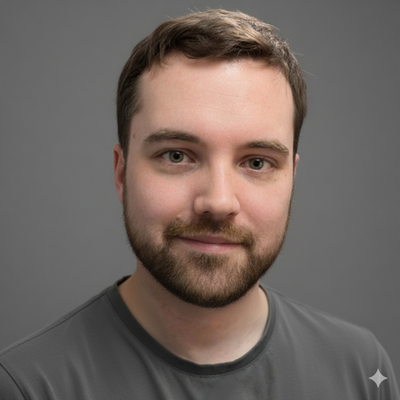

Roman Mednitzer
Systems & Platform Engineer
Vienna, Austria
I operate and integrate infrastructure across Linux, virtualization, storage, networking, Kubernetes/OpenShift, observability, automation, and recovery. I am strongest when I can own the technical system across layers rather than only one product.
- Available
- Open to full-time systems, platform, and integration roles in Vienna or remote from Austria
- Working style
- End-to-end technical ownership · clear boundaries · automation where useful · tested recovery
- Interested in
- AI infrastructure · robotics/autonomy · defence/mission systems · edge and HPC
- Outside work
- Hard science fiction · industrial and EBM · building things
- Languages
- German (native) · English (fluent)
About
I am a systems and platform engineer with around ten years of production-operations experience in managed services, enterprise infrastructure, and a regulated medical-device environment. My work has crossed Linux and Windows systems, virtualization, storage, networking, Kubernetes/OpenShift, observability, backup and recovery, automation, and operational documentation.
I am comfortable with undocumented systems and technical discovery. I work best when the objective, organisational boundaries, relevant access, decision owners, and acceptance criteria are clear; inside that problem space I prefer broad technical autonomy and responsibility for execution.
The direction I want to grow into is infrastructure that sits close to the product or mission: AI/inference platforms, robotics and autonomy, defence and mission systems, edge deployments, GPU/HPC, scientific systems, and other technically demanding environments. I do not mind hard work when it compounds into useful technical depth.
Outside work I read hard science fiction, listen to industrial and EBM, and build things. I have been an IEEE member since 2013.
Experience
Professional experience. The common thread is production infrastructure, troubleshooting across system boundaries, recovery, and controlled change.
-
2025–2026
IT Systems Administrator
Kwizda Holding GmbH · Vienna
Group infrastructure across a mixed Windows and Linux estate. I owned backup and recovery with documented restore verification, ran monitoring and alerting, managed server infrastructure, and contributed to Kubernetes and GitOps adoption.
-
2017–2025
IT Systems Engineer
EBCONT operations GmbH · Vienna
Eight years in managed services, progressing from junior to senior-level work. I handled incident, problem, and change work for production customer environments; operated virtualization and enterprise storage; built and operated Kubernetes platforms with GitOps delivery; maintained source-control and CI services; and worked in third-level support and on-call operations.
-
2016–2017
IT Systems Administrator
medPhoton GmbH · Salzburg
Server and application operations in a regulated medical-device environment: structured troubleshooting and root-cause analysis, backup and integrity checks, ISMS and business-continuity work, ISO 27001 audit preparation, and written operating procedures.
-
2012–2016
IT Technician
Ledl.net GmbH and medPhoton GmbH · Salzburg
Austrian IT Technician apprenticeship completed in 2016, starting with Linux web-hosting operations, domain management and customer support, then continuing with technical support, backup and recovery in a regulated medical-device environment.
Technical scope
My professional strength is integration across infrastructure layers rather than specialization in a single vendor product.
- Professional work
- Linux Windows Server Virtualization Enterprise storage Server hardware Networking Kubernetes / OpenShift GitOps Ansible / Terraform Source control & CI Monitoring & alerting Backup & recovery
- Operating disciplines
- Incident / problem / change Technical discovery Rollback Tested restores Documentation & SOPs Application onboarding ISMS / BCM exposure ISO 27001 audit preparation
- Working knowledge
- VMware vSphere OpenStack Helm Jenkins AWS
Personal projects
These are personal, AI-assisted projects outside employment. I use AI heavily for implementation, testing and documentation; I define the requirements, integrate and review the components, validate behaviour, troubleshoot failures, and operate the resulting systems. They are not presented as professional software-development or ML-research experience.
relay-shell
Apache-2.0 · MCPrelay-shell exists because I do not want AI that can only suggest commands. It gives an AI client a real local shell and SSH fleet access—commands, PTYs, transfers, port forwards, and fan-out—then puts authority, policy, limits, redaction, and audit around that capability. Every action is classified and bounded. The interesting problem is not whether an agent can operate a machine; it is whether it can do so without making the control boundary disappear.
infra
Apache-2.0 · OpenTofuinfra is the rebuildable substrate: OpenTofu for KVM/libvirt Ubuntu VMs and Talos Linux Kubernetes. Environments are separated, state can be remote, locked, and encrypted, and CI checks formatting, lint, security, secrets, and module behaviour. If a host disappears, I want the code and documented decisions to be enough to make the next one.
automation
Apache-2.0 · Ansibleautomation is what turns a fresh Linux host into one I am willing to operate: a CIS-based baseline, configuration, SRE tooling, local inference, and machine-readable control mappings to NIS2, the Cyber Resilience Act, GDPR, and ISO/IEC 27001. I would rather encode a control and test the result than leave it as prose.
More at github.com/rmednitzer
The lab
The lab is personal and experimental, not a miniature enterprise. It is where I combine Linux, storage, Kubernetes, telemetry, security, local models, and agent tooling, then change one layer and observe what that does to the rest.
One branch is a self-hosted knowledge and OSINT system built around PostgreSQL, graph and vector retrieval, vulnerability intelligence, and local inference. I use it because I want the data, retrieval path, and model boundary under my control, not because every workload needs to be local.
The other reason the lab exists is to rehearse failure. Automation has authorization boundaries and audit trails; infrastructure is rebuilt from code; snapshots and backups matter only if recovery works. I break things deliberately often enough that rollback and rebuild are design inputs rather than incident-day inventions.
- Built with
- Talos Flux ZFS Sanoid Restic Forgejo Wazuh VictoriaMetrics PostgreSQL pgvector Apache AGE llama.cpp Ollama MCP PydanticAI